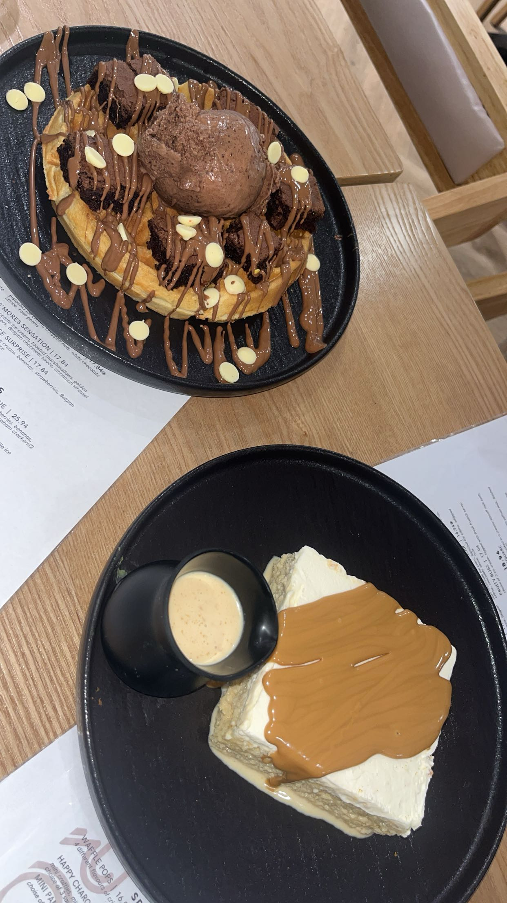

Curious
Curiosity guides me, and adventure is playground. Every twist reveals new discoveries, with desi jugad—clever hacks—as my secret weapon. love to turn chaos into fun and overlooked things into solutions, making life an exciting story. Kinda innovative spirit !!!

foodie
Street food is my instant soul medicine—vibrant spices and bold flavors brighten any day. Yet, nothing beats a home-cooked meal, a warm hug filled with love and memories. Street food fuels adventures; home cooking feeds the heart.

techie
I’m a CS student learning coding through classes, YouTube, and hands-on practice. I love coding because I enjoy the thrill of struggling with a bug and finally figuring it out, that feeling of solving a problem never gets old. I’m looking for internship opportunities to gain real-life experience, grow my skills, and tackle projects that challenge me.